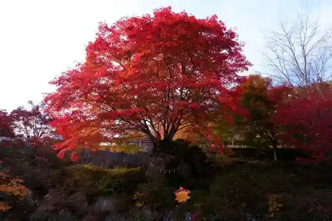
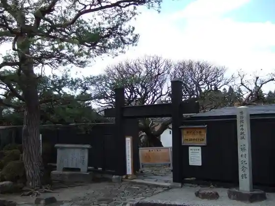
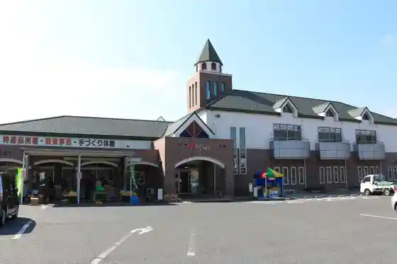

Noka Kateiryori Resutoran Chikori Village Babazu Dainingu
Nakatsugawa, Gifu · 0573-62-1545 · Official / source link
Yu Mori Gorge no Momiji
Nakatsugawa, Gifu · Official / source link

Fuji Village Memorial Museum
Nakatsugawa, Gifu · 0573-69-2047 · Official / source link

Roadside Station Kirira Sakashita
Nakatsugawa, Gifu · 0573-70-0050 · Official / source link

Tono Jiuta Mai Ki to Shibai Koya
Nakatsugawa, Gifu · Official / source link
Nakasendo Ochiai Yado
Nakatsugawa, Gifu · 0573-62-2277 · Official / source link
Magome Yado
Nakatsugawa, Gifu · 0573-69-2336 · Official / source link
Nakatsugawa Fureai Ranch
Nakatsugawa, Gifu · 0573-69-4822 · Official / source link
Suton Museum Hiroshi Ishi Kan
Nakatsugawa, Gifu · 0573-45-2110 · Official / source link
Nakatsugawa Onsen Kua Resort Yubunezawa
Nakatsugawa, Gifu · 0573-69-5000 · Official / source link
Kashimo Meiji Za
Nakatsugawa, Gifu · 0573-79-3611 · Official / source link
Nigiwai Tokusan Kan
Nakatsugawa, Gifu · 0573-62-2277 · Official / source link
Tsukechi Kyo Kura Ya Onsen Onpoi Baths
Nakatsugawa, Gifu · 0573-82-5311 · Official / source link
Tokiwaza
Nakatsugawa, Gifu · 0573-66-1111 · Official / source link
Naegi Sakura Park Cherry Blossoms
Nakatsugawa, Gifu · 0573-62-2277 · Official / source link
Roadside Station Kashimo
Nakatsugawa, Gifu · 0573-79-3319 · Official / source link
Iga Kuri Village Nakatsugawa Maron Park
Nakatsugawa, Gifu · 0573-62-2277 · Official / source link
Yu Mori Gorge
Nakatsugawa, Gifu · Official / source link
Naegi Castle Ruins
Nakatsugawa, Gifu · 0573-66-8181 · Official / source link
Fujimidai Highlands
Nakatsugawa, Gifu · 0573-66-1111 · Official / source link
Otome Gorge
Nakatsugawa, Gifu · 0573-79-2111 · Official / source link
Gifu Nakatsugawa Chikori Village
Nakatsugawa, Gifu · 0573-62-1545 · Official / source link
Kaba no Mizumi
Nakatsugawa, Gifu · Official / source link
Fokujamborii Memorial Museum
Nakatsugawa, Gifu · 0573-75-4444 · Official / source link
Ni Tsu Moriyama
Nakatsugawa, Gifu · 0574-72-1311 · Official / source link
Ena Yama
Nakatsugawa, Gifu · 0573-66-1111 · Official / source link
Roadside Station Sen Haha
Nakatsugawa, Gifu · 0573-75-5255 · Official / source link
Roadside Station Kagai Michi Tsukechi
Nakatsugawa, Gifu · 0573-82-2000 · Official / source link
Roadside Station Itsuki no Yakata
Nakatsugawa, Gifu · 0573-74-2111 · Official / source link
Naka no Shima Park Fureai Village
Nakatsugawa, Gifu · 0573-63-2880 · Official / source link
Jiuta Mai Ki Koen (Nakatsugawa)
Nakatsugawa, Gifu · Official / source link
Agi no Oi Cho
Nakatsugawa, Gifu · 0573-63-2001 · Official / source link
Tsukechi Kawa River Park
Nakatsugawa, Gifu · 0573-82-4737 · Official / source link
Yubunezawa River Park
Nakatsugawa, Gifu · 0573-69-4111 · Official / source link
Nakasendo Nakatsugawa Yado
Nakatsugawa, Gifu · 0573-62-2277 · Official / source link
Tsukechi Kyo
Nakatsugawa, Gifu · 0573-82-4737 · Official / source link
Naegi Toyama Shiryo Kan
Nakatsugawa, Gifu · 0573-66-8181 · Official / source link
Yamamoto Farm
Nakatsugawa, Gifu · 0573-69-3355 · Official / source link
Agi Castle Ruins
Nakatsugawa, Gifu · 0573-63-2001 · Official / source link
Fanfamingu Ichigo Kari
Nakatsugawa, Gifu · 0573-79-3601 · Official / source link
Meguriin Sanchi Chokubai Tokoro
Nakatsugawa, Gifu · Official / source link
Tsukechi Kyo Miyajima Campground
Nakatsugawa, Gifu · 0573-82-4737 · Official / source link
Tsukechi Kyo Aomi Campground
Nakatsugawa, Gifu · 0573-82-4737 · Official / source link
Nakatsugawa Kobutsu Museum
Nakatsugawa, Gifu · 0573-67-2110 · Official / source link
Nakatsugawa Kodomo Science Museum
Nakatsugawa, Gifu · 0573-66-9090 · Official / source link
Ryujin no Taki Campground (Kyu Yu Mori Keikoku Campground)
Nakatsugawa, Gifu · ryuujinnotaki@gmail.com · Official / source link
BeGreen Hiyori Ritsu
Nakatsugawa, Gifu · Official / source link
Tsukechi Kyo Prefectural Nature Park Shinrin Campground
Nakatsugawa, Gifu · Official / source link
to no Iwa Oto Campground
Nakatsugawa, Gifu · Official / source link
Tsukechi Kyo Motoya Oto Campground
Nakatsugawa, Gifu · Official / source link
Fukuoka Roman Keikoku Oto Campground
Nakatsugawa, Gifu · 0573-72-3654 · Official / source link
Kurikuri Village Nakatsugawa
Nakatsugawa, Gifu · 0573-67-9208 · Official / source link
Ochiai no Ishidatami
Nakatsugawa, Gifu · 0573-66-5544 · Official / source link
Nakatsugawa Nakasendo History Museum
Nakatsugawa, Gifu · 0573-66-6888 · Official / source link
Kumagaya Moriichi Tsukechi Memorial Museum
Nakatsugawa, Gifu · 0573-83-0050 · Official / source link
Ena Kyo Wanda Land
Nakatsugawa, Gifu · 0573-45-3333 · Official / source link
Ryoma Shrine
Nakatsugawa, Gifu · 0573-68-8040 · Official / source link
Kashimo Shinrinkumiai Mokumoku Center
Nakatsugawa, Gifu · 0573-79-3333 · Official / source link
Higashimino Fureai Center
Nakatsugawa, Gifu · 0573-68-8000 · Official / source link
Kikuhime no Haka (Nakatsugawa Historic Site (Gorin to))
Nakatsugawa, Gifu · Official / source link
Kita Ena Campground
Nakatsugawa, Gifu · 0573-82-4802 · Official / source link
FORESTDOME Tsukechi Kyo
Nakatsugawa, Gifu · 090-7222-1044 · Official / source link
Tori no Saezurito Hoshizora no Campground
Nakatsugawa, Gifu · 090-2943-6546 · Official / source link
Otome Keikoku Campground
Nakatsugawa, Gifu · Official / source link
Hoshitoseseragi no Guranpingu
Nakatsugawa, Gifu · Official / source link